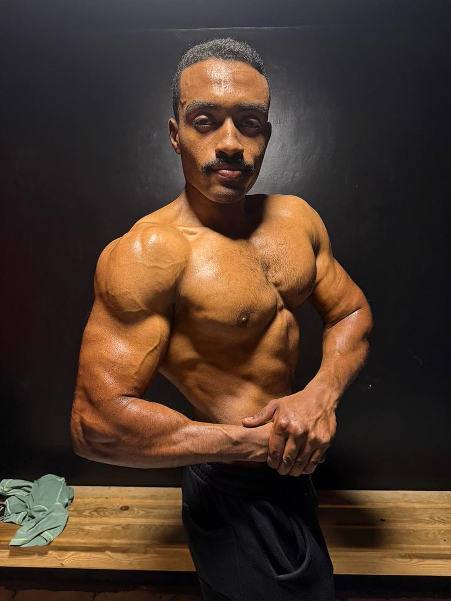
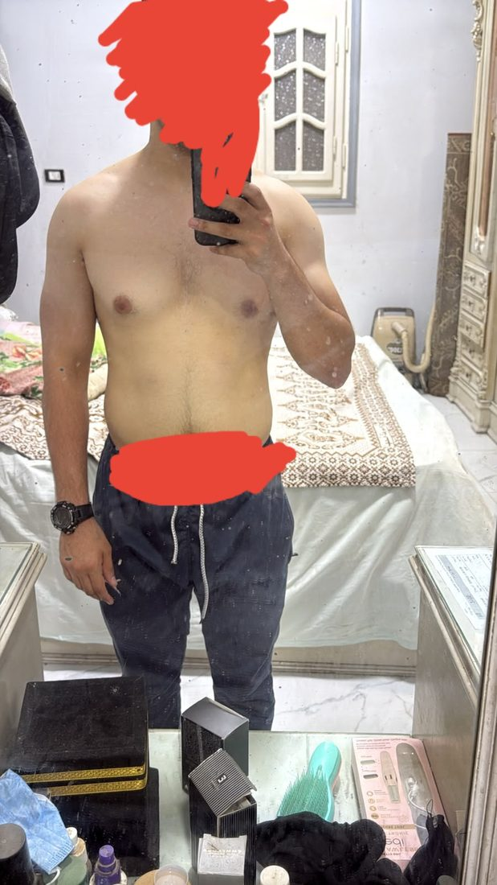
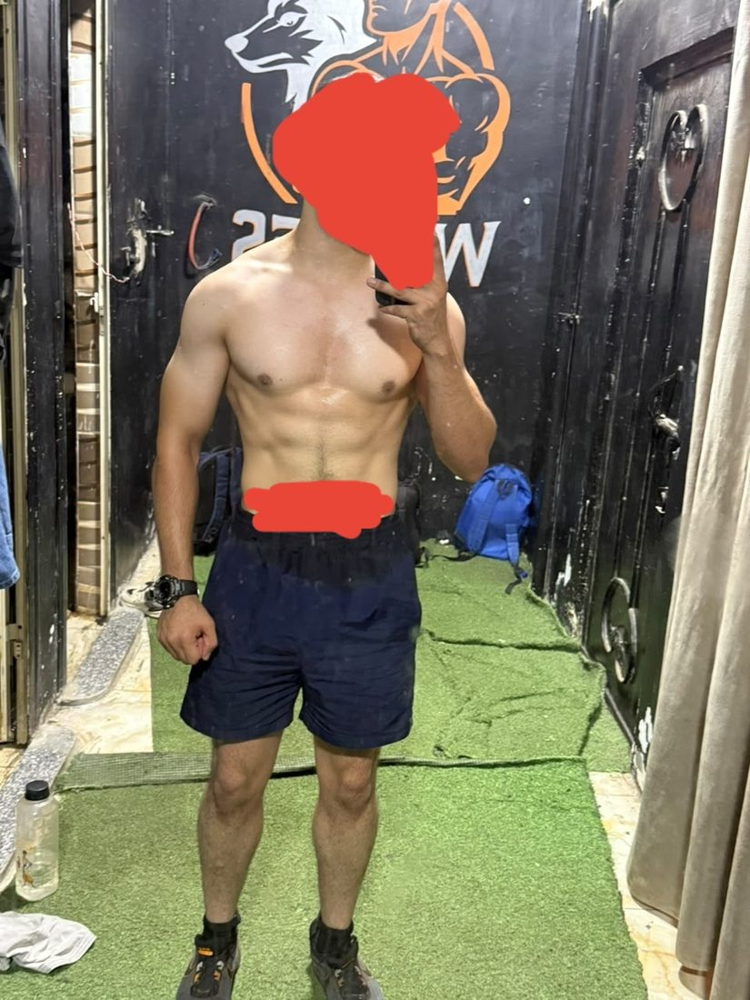

أكثر من مجرد تدريب
MFT منظومة Online Medical Fitness Coaching متكاملة تهدف إلى مساعدة الأشخاص على بناء جسم أقوى وحياة أكثر صحة، من خلال الجمع بين التدريب الرياضي، التغذية المخصصة، التقييم الصحي، والمتابعة المستمرة أونلاين.
نحن لا نؤمن بوجود خطة واحدة تناسب الجميع. كل شخص لديه أهداف مختلفة، وروتين مختلف، ومستوى مختلف من التدريب، واحتياجات صحية مختلفة.
لهذا تبدأ رحلة MFT بفهم الشخص أولًا، ثم بناء خطة تناسبه، ومتابعة تطوره وإجراء التعديلات اللازمة خلال الرحلة.
تعرف على د. محمد الريسFounder & Medical Fitness Director
التدريب الأونلاين (Online Medical Fitness Coaching)
Online Medical Fitness Coaching من MFT هو برنامج أونلاين لمتابعة متكاملة ومخصصة، يجمع بين التدريب، التغذية، المتابعة الطبية والرياضية، والتعديل المستمر للخطط، لتحصل على منظومة مصممة وفق هدفك، احتياجاتك، مستوى نشاطك، وظروف حياتك اليومية.
-
Personalized Nutrition
التغذية المخصصة
خطة غذائية يتم بناؤها وفق احتياجاتك، هدفك، مستوى نشاطك، روتينك اليومي، وتفضيلاتك الغذائية.
- السعرات
- البروتين
- الكربوهيدرات
- الدهون
- توزيع الوجبات
- خيارات غذائية مناسبة
- تعديلات حسب التقدم
-
Workout Systems
أنظمة التمارين
تصميم نظام تدريبي مناسب لهدفك ومستواك وإمكانياتك ومكان تدريبك (المنزل أو الجيم)، مع اختيار تقسيمة التمرين المناسبة وتطبيق مبدأ التحميل التدريجي لتحقيق أفضل تقدم ممكن. تشمل:
- Push / Pull / Legs
- Upper / Lower
- Arnold Split
- Full Body
- Home Training
- Progressive Overload
- بناء العضلات
- تطوير القوة والتحمل
- تحسين نقاط الضعف
-
Medical & Fitness Follow-up
المتابعة الطبية والرياضية
متابعة دورية أونلاين تجمع بين تقييم التقدم الرياضي ومراجعة المؤشرات والبيانات ذات الصلة، مع مراجعة التحاليل عند الحاجة وضبط المتغيرات المناسبة وفق حالتك ونتائجك. تشمل:
- التقييم الدوري
- متابعة الوزن والقياسات
- مراجعة الأداء والتقدم
- مراجعة التحاليل عند الحاجة
- متابعة الالتزام والصعوبات
- ضبط المتغيرات الغذائية والتدريبية
- التعامل مع حالات ثبات التقدم
-
Plan Adjustments
تعديل الخطط
مع تغير النتائج والظروف، يمكن تعديل:
- السعرات
- الوجبات
- التدريب
- حجم التدريب
- شدة التدريب
- الأهداف
- الروتين
-
Lifestyle Coaching
Lifestyle Coaching
نجاح البرنامج لا يعتمد على التدريب والتغذية فقط. لذلك نهتم أيضًا بـ:
- النوم
- الاستشفاء
- النشاط اليومي
- إدارة التوتر
- تنظيم الروتين
- بناء العادات
-
Continuous Support
الدعم المستمر
رحلتك لا تتوقف بين المراجعات، ويكون معك أونلاين من يوجّهك ويجيب عن استفساراتك. يشمل:
- التواصل المستمر
- الإجابة عن الأسئلة
- التوجيه
- التحفيز
- حل الصعوبات
ما يميز MFT: برنامج مخصص لك، وليس جاهزًا للجميع.
الأسلوب التقليدي
- خطة موحدة
- تجاهل الاختلافات الفردية
- التركيز على النتيجة السريعة
- تعديلات محدودة
منهج MFT
في MFT لا نعتمد على خطة ثابتة للجميع، بل على منهج متكامل يبدأ بفهم حالتك واحتياجاتك، ثم بناء خطة مناسبة لك ومتابعة تطورها باستمرار.
- تقييم شاملفهم حالتك، أهدافك، نمط حياتك واحتياجاتك.
- خطة مخصصةتدريب وتغذية مصممان خصيصًا لك وفق أهدافك وقدراتك.
- مراعاة الحالة الصحيةدمج المعلومات الصحية والبيانات الطبية ذات الصلة عند الحاجة.
- متابعة وتعديل مستمرقياس تقدمك بشكل دوري وتطوير الخطة بناءً على استجابتك.
- تحول متكامل ومستدامالتركيز على الصحة، شكل الجسم، الأداء، وبناء عادات تستمر معك.
منهجية MFT: منهجية مُصممة خصيصًا لتناسب احتياجاتك
-
01 — ASSESS
التقييم
ابدأ بفهم نقطة البداية.
- الهدف
- مستوى النشاط
- القياسات
- التاريخ التدريبي
- الروتين اليومي
- المعلومات الصحية المتاحة
- الاحتياجات الفردية
-
02 — FUEL
التغذية
غذاؤك جزء أساسي من رحلتك.
- تحديد الاحتياجات من السعرات
- تحديد احتياجات البروتين
- تنظيم الكربوهيدرات
- تنظيم الدهون
- اختيار الوجبات المناسبة
- مراعاة التفضيلات الغذائية
- بناء عادات غذائية قابلة للاستمرار
-
03 — TRAIN
التدريب
برنامج تدريبي مبني حول هدفك ومستواك.
- تصميم جدول مخصص
- اختيار تقسيمة التدريب المناسبة
- تطوير القوة
- تطوير العضلات
- تحسين التحمل
- Progressive Overload
- العمل على نقاط الضعف
- متابعة الأداء
-
04 — SUSTAIN
الاستمرارية
النتيجة الحقيقية هي التي تستمر.
- المتابعة
- تقييم التقدم
- تعديل الخطة
- تنظيم النوم
- تحسين التعافي
- إدارة التوتر
- تحسين الروتين
- بناء العادات الصحية
الرحلة: كيف تبدأ التحول مع MFT؟
-
أرسل بياناتك
شارك أهدافك، مستوى نشاطك، روتينك، وتجربتك السابقة.
-
التقييم
نفهم نقطة البداية والاحتياجات والأهداف.
-
بناء الخطة
يتم إعداد خطة التدريب والتغذية المناسبة لك.
-
المتابعة
نتابعك أونلاين ونراجع الأداء والتقدم بشكل دوري.
-
التعديل
يتم تطوير الخطة وفق النتائج والتغيرات.
-
التحول
تصل إلى أهدافك وتعمل على الحفاظ على النتائج.
برامج صممت من أجلك
كل برنامج يُقدَّم أونلاين ويُبنى بعد تقييم أولي لهدفك ومستواك وروتينك، ويشمل خطة تدريب وتغذية، ومتابعة وتعديلًا مستمرين خلال الرحلة.
-
01Weight Management
إنقاص الوزن وإدارة تركيب الجسم
برنامج يركز على تحسين الوزن وتركيب الجسم من خلال التغذية والتدريب والمتابعة.
- مناسب لـ
- من يريد خفض الوزن ونسبة الدهون بطريقة منظمة وقابلة للاستمرار.
- التركيز
- توازن السعرات، الحفاظ على الكتلة العضلية، والالتزام بالنظام.
-
02Muscle Building
بناء العضلات
برنامج مخصص لمن يهدف إلى تطوير الكتلة العضلية وتحسين القوة والأداء.
- مناسب لـ
- من يريد زيادة الكتلة العضلية ورفع مستوى القوة.
- التركيز
- زيادة الأحمال تدريجيًا، تغذية داعمة للنمو، وتعافٍ كافٍ بين الحصص.
-
03Strength & Endurance
القوة والتحمل
برنامج لتطوير القوة والتحمل وتحسين الأداء البدني.
- مناسب لـ
- من يريد رفع قدرته على الأداء والتحمل في التمرين والحياة اليومية.
- التركيز
- بناء القوة تدريجيًا وتحسين التحمل مع تنظيم الحمل التدريبي.
-
04Fitness
تحسين اللياقة
برنامج يركز على تطوير اللياقة والحركة والقدرة البدنية.
- مناسب لـ
- المبتدئين ومن يعودون للتمرين بعد فترة انقطاع.
- التركيز
- الحركة، القدرة البدنية، وبناء أساس ثابت يمكن البناء عليه.
-
05Lifestyle
تحول نمط الحياة
برنامج يركز على بناء عادات يومية أكثر صحة وتنظيمًا.
- مناسب لـ
- من يريد تغيير روتينه اليومي بعادات صحية يستطيع الاستمرار عليها.
- التركيز
- النوم، النشاط اليومي، التغذية، وإدارة التوتر.
-
06Recovery & Rehab
التعافي وإعادة التأهيل
برنامج يركز على الحركة والتعافي وفق الاحتياجات المناسبة للحالة.
- مناسب لـ
- من لديه احتياجات حركية أو يعود للتمرين بعد فترة تعافٍ.
- التركيز
- الحركة الآمنة والتدرج، ويُحدَّد المناسب بعد تقييم الحالة.
ماذا ستصبح بعد الرحلة؟
اكتشف الفرق مع MFT.
من خلال برنامج أونلاين مخصص لك، وإشراف د. محمد الريس وفريقه، نساعدك على بناء رحلة تدريب وتغذية تتناسب مع هدفك واحتياجاتك، لتطور قدراتك، وتحسن تكوين جسمك، وتبني عادات يمكن الاستمرار عليها.

نتائج يمكنك ملاحظتها مع الوقت
-
أقوى
طوّر قوتك وقدرتك على أداء التمارين بكفاءة، مع تحكم أفضل في الحركة وثبات أكبر أثناء التدريب.
-
أكثر لياقة
حسّن قدرتك البدنية والتحمل، واجعل الحركة والأنشطة اليومية أسهل وأكثر كفاءة.
-
تكوين جسم أفضل
اعمل على تحسين تركيب الجسم وتقليل نسبة الدهون مع الحفاظ على الكتلة العضلية، بما يتناسب مع هدفك واستجابتك للبرنامج.
-
أداء أفضل
تابع تطورك في الأوزان والتكرارات وجودة الأداء، وابنِ مستوى تدريبيًا يتقدم معك خطوة بخطوة.
-
عادات أفضل
طوّر أسلوبًا أكثر تنظيمًا في التدريب والتغذية ونمط حياتك، بما يساعدك على الالتزام والاستمرار.
-
صحة أفضل
اجعل صحتك جزءًا أساسيًا من رحلتك، من خلال نهج يجمع بين التدريب والتغذية والمتابعة بما يتناسب مع احتياجاتك.
الهدف ليس الوصول إلى نتيجة مؤقتة، بل بناء جسم أقوى وعادات أفضل ونمط حياة تستطيع الاستمرار عليه.
تجارب حقيقية من عملائنا
قبل وبعد
كل صورة هنا هي نتاج رحلة تدريبية وغذائية مكتملة، بإشراف د. محمد الريس وفريق MFT.
-
BEFOREAFTER

Muscle Buildingزيادة الكتلة والبناء العضلي
تطوير الكتلة العضلية وإبراز تفاصيل الذراعين والكتفين والصدر مع تحسين التناسق العام للجسم.
-
BEFOREAFTER

 Fat Loss
Fat Lossخسارة دهون وتحسين شكل الجسم
خطة غذائية وتدريبية ساعدت على خفض الدهون وتحسين تناسق الجسم خلال فترة قصيرة.
-
BEFOREAFTER


Body Recompخفض دهون وتحديد عضلي
تطوير القوة وخفض الدهون مع إبراز عضلات الظهر والكتفين والوصول إلى مظهر أكثر تحديدًا.
الحياة داخل MFT: عِش التجربة، اصنع التحول
التدريب وتطوير القوة والأداء.
التغذية والعادات الغذائية.
المتابعة والتوجيه المستمر أونلاين.
التقييم الصحي.
التعافي والاستشفاء.
جلسات وتدريبات جماعية أونلاين.
الأسعار: اختر دعمك، وابدأ رحلتك نحو التحول
جميع الباقات تُقدَّم أونلاين ضمن Online Medical Fitness Coaching: تدريب وتغذية ومتابعة بإشراف طبي.
-
STARTER
بداية منظمة لبناء أساس واضح للتدريب والتغذية.
يشمل:- خطة تدريب
- خطة تغذية
- متابعة
- توجيه
-
TRANSFORMATION
برنامج متكامل لمن يبحث عن رحلة تحول منظمة مع متابعة وتعديلات مستمرة.
يشمل:- التغذية المخصصة
- التدريب المخصص
- المتابعة الأسبوعية
- متابعة التقدم
- تعديل الخطة
- التوجيه لنمط الحياة
-
ELITE
مستوى متقدم من الدعم والمتابعة الشخصية.
يشمل:- تغذية مخصصة
- تدريب مخصص
- متابعة مكثفة
- تقييم مستمر
- تعديلات متقدمة
- دعم مستمر
- Lifestyle Coaching
الأسئلة الشائعة
هل MFT مناسب للمبتدئين؟
نعم، يمكن تصميم البرنامج وفق مستوى الشخص وخبرته وأهدافه.
كيف يتم التقييم الأول؟
يبدأ أونلاين بجمع المعلومات الأساسية عن الهدف، النشاط، الروتين، التاريخ التدريبي، والمعلومات الصحية المتاحة.
هل توجد خطة غذائية مخصصة؟
نعم، يتم بناء الخطة وفق الاحتياجات والهدف والروتين والتفضيلات الغذائية.
هل أحتاج إلى الذهاب إلى الجيم؟
ليس بالضرورة. البرامج تُقدَّم أونلاين، ويمكن تصميمها وفق الإمكانيات المتاحة ومكان تدريبك، في المنزل أو الجيم.
كيف تتم المتابعة؟
تتم المتابعة أونلاين، مع مراجعة الأداء والالتزام والتقدم بشكل دوري.
هل يتم تعديل الخطة؟
نعم، يمكن تعديل التدريب أو التغذية وفق النتائج والتقدم والتغيرات.
هل أحتاج إلى تحاليل؟
قد تكون بعض الفحوصات مناسبة بحسب الحالة والهدف، ويتم تحديد الحاجة إليها وفق التقييم المناسب.
كيف يعمل التدريب الأونلاين مع MFT؟
كل برامج MFT تُقدَّم أونلاين ضمن Online Medical Fitness Coaching؛ تبدأ بتقييم أولي لحالتك وأهدافك، ثم تتابع التدريب والتغذية مع مراجعة دورية وتعديل مستمر للخطة.
ما مدة البرنامج؟
تختلف المدة حسب البرنامج والهدف واحتياجات العميل.
هل يمكن تغيير البرنامج أثناء الرحلة؟
يمكن تعديل البرنامج عندما تتغير الأهداف أو النتائج أو الاحتياجات.
مقالات MFT — فهم جسمك، وابدأ تغييره بوعي
محتوى علمي ورياضي مبسط يساعدك على اتخاذ قرارات أفضل في التدريب والتغذية ونمط الحياة.
المشروبات الغازية وخسارة الوزن: كيف تؤثر البيبسي والكولا على نظامك الغذائي؟
المشروبات الغازية قد تبدو جزءًا بسيطًا من الوجبة، لكن تناولها بشكل متكرر يمكن أن يضيف كمية كبيرة من السكر والسعرات دون أن تمنح قدرًا كبيرًا من الشبع.
تمارين المقاومة وخسارة الوزن: لماذا بناء العضلات مهم؟
خسارة الدهون ليست مجرد رقم على الميزان.
ما هو الـMedical Fitness؟ وكيف يمكن أن تتغير خطة التدريب حسب حالتك الصحية؟
الـMedical Fitness هو مفهوم يربط التدريب والتغذية والصحة بدل التعامل مع الجسم بمعزل عن تاريخه الصحي واحتياجاته.
النوم وخسارة الوزن: كيف يؤثر النوم في الشهية والتعافي؟
النوم ليس مجرد وقت للراحة.
نقص الحديد والأنيميا: أطعمة تساعدك على دعم احتياجات جسمك
الحديد عنصر أساسي لصناعة الهيموغلوبين، الذي يساعد خلايا الدم الحمراء على نقل الأكسجين إلى أنسجة الجسم.
متى تتناول الفيتامينات والمكملات الغذائية؟ دليل عملي بدون تعقيد
ليس هناك وقت سحري واحد يناسب جميع الفيتامينات والمكملات.
مشروبات الديتوكس وخسارة الوزن: ما الذي تقوله الأدلة؟
تنتشر مشروبات الديتوكس والبرامج التي تعد بإزالة السموم وتسريع حرق الدهون.
5 تمارين كارديو فعالة في المنزل بدون معدات
لا تحتاج دائمًا إلى صالة رياضية حتى تبدأ الحركة.
جنين القمح: ما فوائده وكيف يمكنك إضافته إلى نظامك الغذائي؟
جنين القمح جزء صغير من حبة القمح لكنه يحتوي على مجموعة من العناصر الغذائية.
ماذا تفعل بعد الإفراط في تناول الطعام؟ العودة للنظام بدون شعور بالذنب
وجبة واحدة زائدة لا تعني أن كل ما فعلته طوال الأسابيع الماضية قد ضاع.
الرياضة في رمضان: كيف تختار التوقيت المناسب للتمرين؟
خلال رمضان تتغير مواعيد النوم والطعام والسوائل، وبالتالي قد يحتاج برنامج التدريب إلى تعديل بدل إيقاف النشاط بالكامل.
الزبادي والليمون قبل النوم: هل يساعدان فعلًا على حرق الدهون؟
من أشهر النصائح المنتشرة على الإنترنت تناول الزبادي مع الليمون قبل النوم بهدف "حرق الدهون".
الأكل العاطفي: كيف تفرق بين الجوع الحقيقي والجوع الناتج عن المشاعر؟
أحيانًا لا نأكل لأن الجسم يحتاج إلى طاقة، بل لأننا نشعر بالتوتر أو الملل أو الحزن أو الضغط.
تنسى شرب الماء؟ أفضل نصائح الترطيب وكيف تفهم احتياجك اليومي
الترطيب جزء أساسي من الحياة اليومية.
أفضل مصادر البروتين الحيوانية والنباتية: كيف تختار ما يناسبك؟
البروتين عنصر مهم لبناء الأنسجة والحفاظ عليها، وله أهمية خاصة للذين يمارسون تمارين المقاومة والأنشطة الرياضية.
العلاقة بين الحالة النفسية والوزن: كيف يمكن للمشاعر أن تؤثر في عاداتك؟
الوزن لا يتأثر بالطعام والرياضة فقط.
كيف تبني عادات صحية للأطفال من خلال القدوة؟
الأطفال يتعلمون كثيرًا من خلال الملاحظة.
هل تحب الطعام أم أصبحت أسيرًا للعادات الغذائية؟
حب الطعام ليس مشكلة.
البيض والكوليسترول: ماذا نعرف فعلًا؟
البيض من أكثر الأطعمة التي تحيط بها الأسئلة المتعلقة بالكوليسترول.
كيف تدعم شريكك في رحلة خسارة الوزن دون ضغط أو انتقاد؟
الدعم الاجتماعي قد يجعل الالتزام بالعادات الصحية أسهل، لكن الدعم لا يعني مراقبة كل لقمة أو التعليق المستمر على الوزن.
لماذا توقف الميزان فجأة؟ فهم مرحلة ثبات الوزن
من الطبيعي أن يتغير معدل النزول مع الوقت.
لماذا لا أفقد الوزن رغم أنني آكل أقل؟ 7 أسباب تحتاج إلى مراجعتها
عبارة "أنا آكل قليلًا ولا أخسر وزني" قد تكون صحيحة، لكنها تحتاج إلى النظر في الصورة الكاملة بدل التركيز على كمية الطعام الظاهرة فقط.
كم تحتاج من البروتين يوميًا؟
احتياج البروتين ليس رقمًا واحدًا للجميع.
المشي وخسارة الوزن: هل تحتاج فعلًا إلى 10,000 خطوة يوميًا؟
المشي من أسهل الطرق لإضافة حركة إلى اليوم.
السعرات الداخلة مقابل السعرات الخارجة: فهم توازن الطاقة ببساطة
الحديث عن السعرات قد يبدو معقدًا، لكن الفكرة الأساسية بسيطة: الجسم يحصل على الطاقة من الطعام والشراب ويستخدمها في الوظائف الحيوية والحركة والنشاط.
كيف تبني وجبة متوازنة؟ البروتين والكربوهيدرات والدهون والخضروات
الوجبة المتوازنة لا تحتاج إلى مكونات غالية أو وصفات معقدة.
لماذا نشتهي الطعام؟ 8 طرق عملية للتحكم في الرغبة الشديدة
الرغبة في الطعام ليست دائمًا علامة على الجوع الحقيقي.
كيف تبدأ تمارين المقاومة إذا كنت مبتدئًا تمامًا؟
البداية الصحيحة أهم من البداية القوية.
لماذا يتغير وزنك كل يوم؟ وما الذي يعنيه الميزان فعلًا؟
الميزان لا يقيس الدهون وحدها.
كيف تحافظ على وزنك بعد خسارة الدهون؟ دليل الانتقال إلى مرحلة الثبات
الحفاظ على النتائج مرحلة مستقلة عن خسارة الوزن.
لا توجد مقالات في هذا القسم حاليًا.
هل أنت مستعد لتحولك؟
ابدأ رحلتك مع MFT أونلاين اليوم، وابنِ جسمًا أقوى وعادات أفضل ونظامًا صحيًا تستطيع الاستمرار عليه.
Better Health. Stronger Body. Greater You.
تواصل معنا
ابدأ الخطوة الأولى
هل لديك هدف تريد الوصول إليه؟ هل تريد برنامجًا تدريبيًا وغذائيًا أونلاين بإشراف طبي يناسبك؟ ابدأ بالتواصل مع MFT لمعرفة المسار المناسب لك.